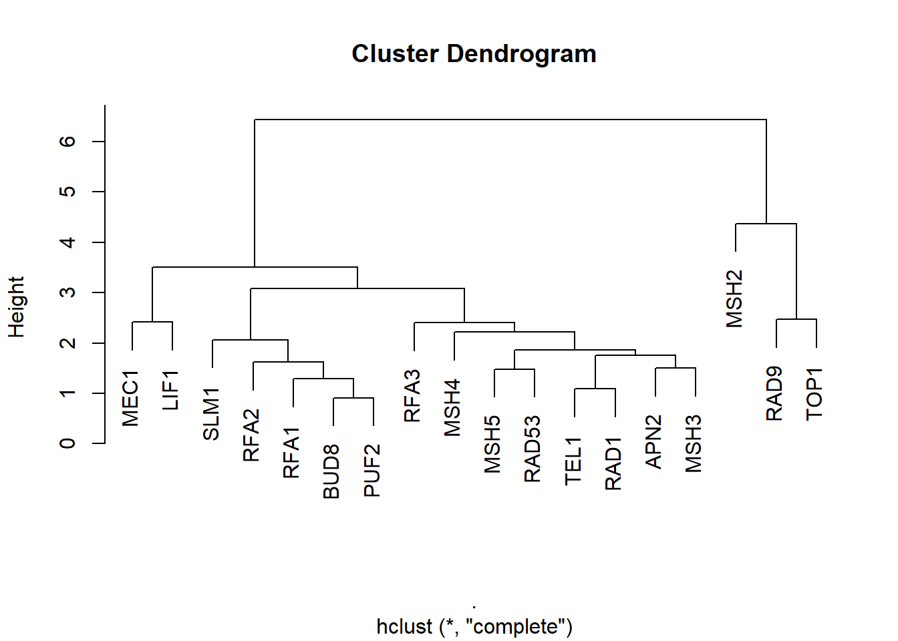
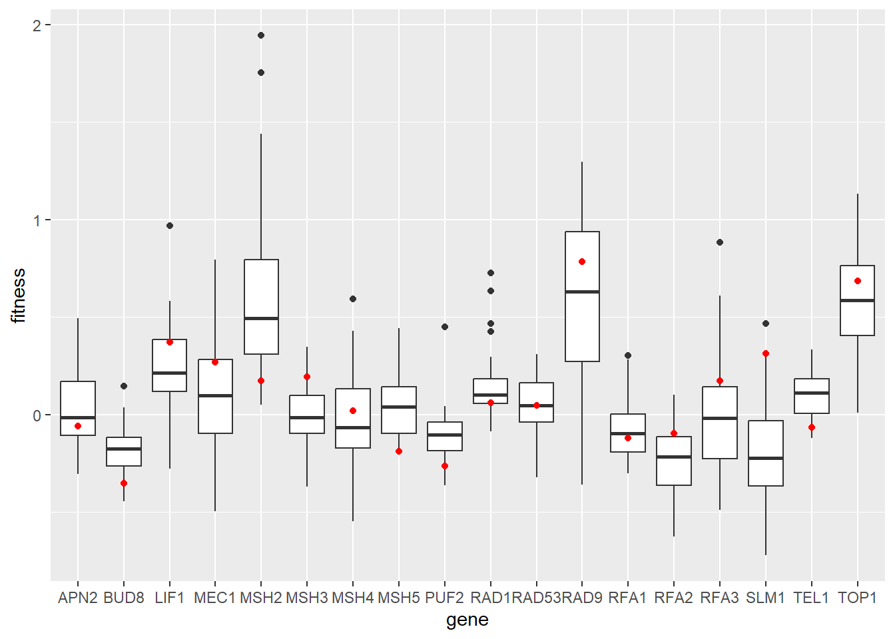
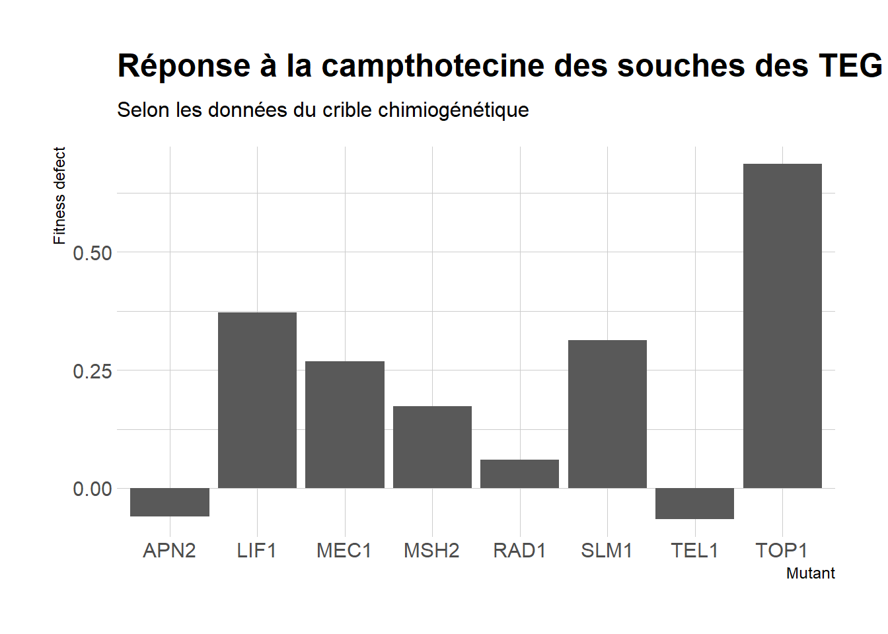
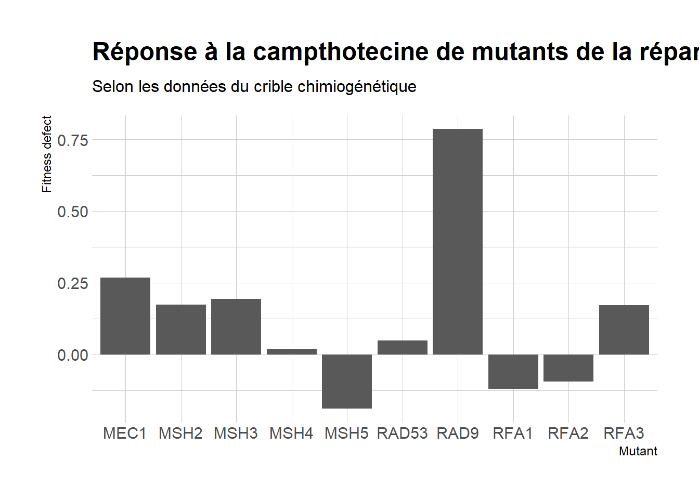
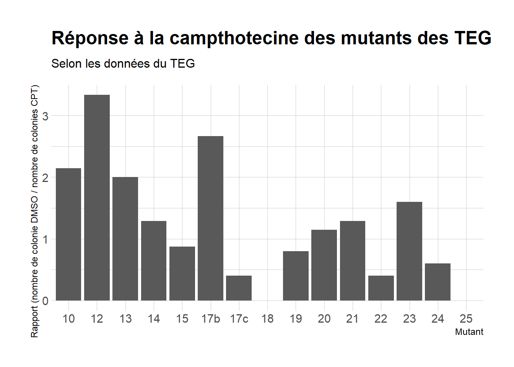
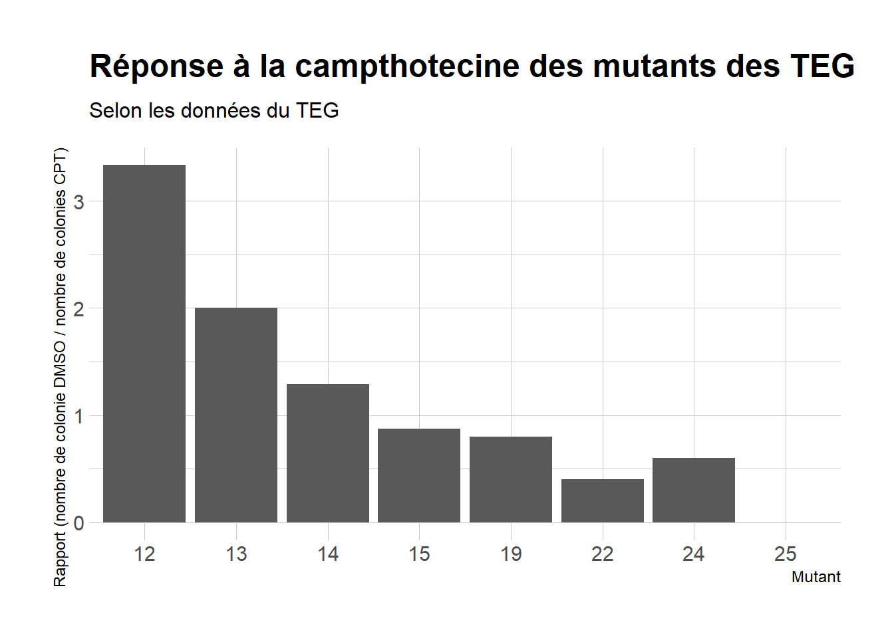
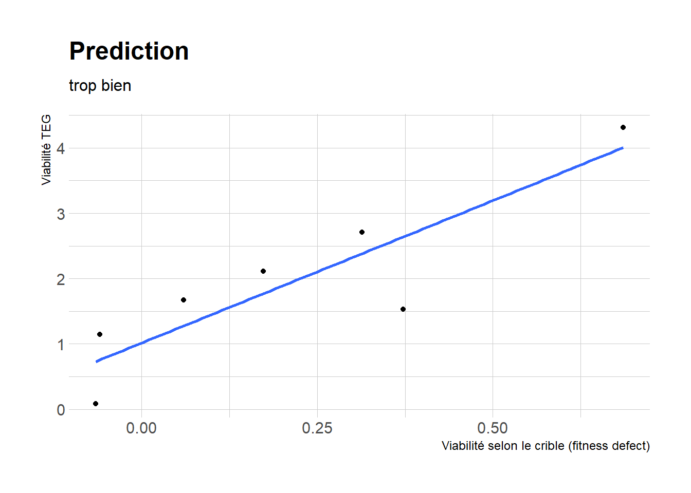
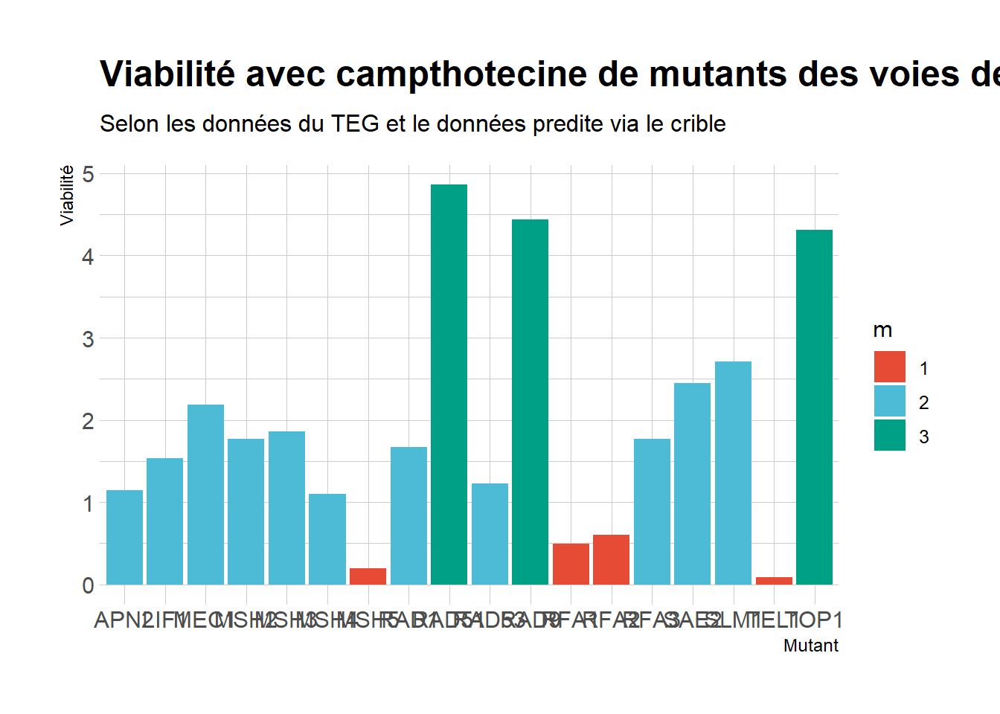
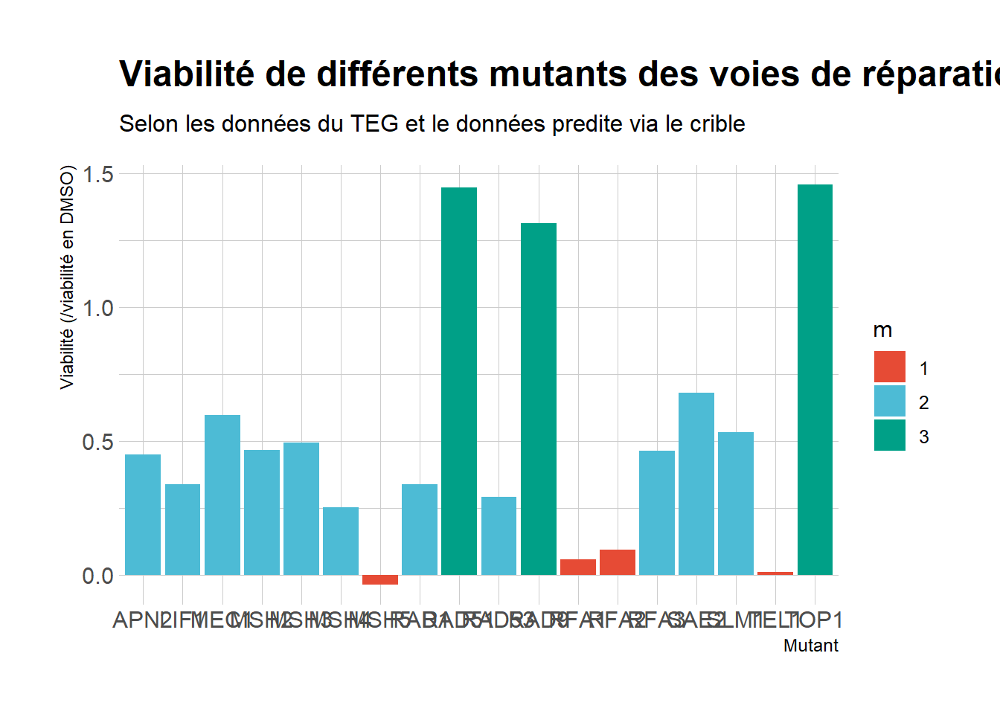

Chapter 8 TEG virtuel
library(tidyr)
library(stringr)
library(FactoMineR)
library(ggplot2)
library(ggrepel)
library(hrbrthemes)
library(ggsci)8.1 Basique
selection des genes
gene = d_merge$Gene
cible = c("RFA1", "RFA2", "RFA3", "MEC1", "RAD9", "RAD53",
"RAD1", "APN2", "LIF1", "MSH2", "TOP1", "TEL1", "SLM1", "MEC1",
"MSH2", "MSH3", "MSH4", "MSH5")extra groupe
v = d_merge[,-c(1,2)] %>% apply(1, function(x){var(x)})
m = d_merge[,-c(1,2)] %>% apply(1, function(x){mean(x)})
gene_v = data.frame(gene = d_merge$Gene, v = v, m = m)
gene_v = gene_v[order(gene_v$v),]
extra_g = gene_v[c(1,2),]$generestriction de la table
cible_ok = c(cible, extra_g)
d_merge_sub = d_merge[,stress_campto] %>% cbind(data.frame(Gene = d_merge$Gene))
d_merge_sub = d_merge_sub[d_merge_sub$Gene %>% sapply(function(x){
if(x %in% cible_ok){
TRUE
}
else{FALSE}
}),]
row.names(d_merge_sub) = d_merge_sub$Gene
d_merge_sub = d_merge_sub[,-dim(d_merge_sub)[2]]plots
d_merge_sub %>% dist() %>% hclust() %>% plot()
gg = NULL
for(i in stress_campto){
if(gg %>% is.null()){
gg = data.frame(gene = row.names(d_merge_sub),
stress = rep(i, (row.names(d_merge_sub) %>% length())),
fitness = d_merge_sub[[i]])
}
else {
gg = gg %>% rbind(data.frame(gene = row.names(d_merge_sub),
stress = rep(i, (row.names(d_merge_sub) %>% length())),
fitness = d_merge_sub[[i]]))
}
}
ggplot(gg) +
aes(y = fitness, x = gene)+
geom_boxplot()+
geom_point(data = subset(gg, stress == "camptothecin_500um"),
aes(y = fitness, x = gene),
color = "red")
cible = c("RAD1", "APN2", "LIF1", "MSH2", "TOP1", "TEL1", "SLM1", "MEC1")
d_merge_sub = d_merge$camptothecin_500um %>% cbind(data.frame(Gene = d_merge$Gene))
d_merge_sub = d_merge_sub[d_merge_sub$Gene %>% sapply(function(x){
if(x %in% cible){
TRUE
}
else{FALSE}
}),]
row.names(d_merge_sub) = d_merge_sub$Gene
colnames(d_merge_sub) = c("fitness", "gene")
ggplot(d_merge_sub)+
aes(x = gene, y = fitness)+
geom_col()+
scale_fill_npg()+
labs(title = "Réponse à la campthotecine des souches des TEG", x = "Mutant", y = "Fitness defect", subtitle = "Selon les données du crible chimiogénétique")+
theme_ipsum()
cible = c("RFA1", "RFA2", "RFA3", "MEC1", "RAD9", "RAD53",
"MSH2", "MSH3", "MSH4", "MSH5")
d_merge_sub = d_merge$camptothecin_500um %>% cbind(data.frame(Gene = d_merge$Gene))
d_merge_sub = d_merge_sub[d_merge_sub$Gene %>% sapply(function(x){
if(x %in% cible){
TRUE
}
else{FALSE}
}),]
row.names(d_merge_sub) = d_merge_sub$Gene
colnames(d_merge_sub) = c("fitness", "gene")
ggplot(d_merge_sub)+
aes(x = gene, y = fitness)+
geom_col()+
scale_fill_npg()+
labs(title = "Réponse à la campthotecine de mutants de la réparation", x = "Mutant", y = "Fitness defect", subtitle = "Selon les données du crible chimiogénétique")+
theme_ipsum()
8.2 Comparaison vrais teg
teg = read.csv("data/tableau teg.csv") %>% na.omit()
teg_s = teg[teg$souche %in% c("12", "13", "14", "15", "19", "22", "24", "25"),]
ggplot(teg)+
aes(x = souche, y = norm_nb_colonies)+
geom_col()+
scale_fill_npg()+
labs(title = "Réponse à la campthotecine des mutants des TEG", x = "Mutant", y = "Rapport (nombre de colonie DMSO / nombre de colonies CPT)", subtitle = "Selon les données du TEG")+
theme_ipsum()
ggplot(teg_s)+
aes(x = souche, y = norm_nb_colonies)+
geom_col()+
scale_fill_npg()+
labs(title = "Réponse à la campthotecine des mutants des TEG", x = "Mutant", y = "Rapport (nombre de colonie DMSO / nombre de colonies CPT)", subtitle = "Selon les données du TEG")+
theme_ipsum()
g = c("RAD1", "APN2", "LIF1", "MSH2", "TOP1", "TEL1", "SLM1", "MEC1")
tmp = d_merge$camptothecin_500um %>% cbind(data.frame(Gene = d_merge$Gene))
tmp = tmp[tmp$Gene %>% sapply(function(x){
if(x %in% g){
TRUE
}
else{FALSE}
}),]
row.names(tmp) = tmp$Gene
tmp = tmp[c("RAD1", "APN2", "LIF1", "MSH2", "TOP1", "TEL1", "SLM1", "MEC1"),]
comparaison = data.frame(gene = tmp$Gene,
fd.crible = tmp$.,
mutant = c("12", "13", "14", "15", "19", "22", "24", "25"),
viabi = teg_s$mean_area,
nb = teg_s$nb_colonies,
n_viabi = teg_s$norm_mean_area,
n_nb = teg_s$norm_nb_colonies)
l1 = lm(fd.crible ~ viabi + nb, data = comparaison)
l11 = lm(fd.crible ~ viabi, data = comparaison) # fonctionne
l12 = lm(fd.crible ~ viabi, data = comparaison[-8,])
l2 = lm(fd.crible ~ log(viabi) + log(nb), data = comparaison[-8,])
l3 = lm(fd.crible ~ n_viabi + n_nb, data = comparaison)
l3 = lm(fd.crible ~ n_viabi, data = comparaison[-8,])
l4 = lm(fd.crible ~ log(n_viabi) + log(n_nb), data = comparaison[-8,])
l12 %>% summary()##
## Call:
## lm(formula = fd.crible ~ viabi, data = comparaison[-8, ])
##
## Residuals:
## 1 2 3 4 5 6 7
## -0.10280 -0.12830 0.23393 -0.06947 0.04705 0.05687 -0.03727
##
## Coefficients:
## Estimate Std. Error t value Pr(>|t|)
## (Intercept) -0.13782 0.09654 -1.428 0.21277
## viabi 0.18026 0.04209 4.283 0.00784 **
## ---
## Signif. codes: 0 '***' 0.001 '**' 0.01 '*' 0.05 '.' 0.1 ' ' 1
##
## Residual standard error: 0.1367 on 5 degrees of freedom
## Multiple R-squared: 0.7858, Adjusted R-squared: 0.743
## F-statistic: 18.34 on 1 and 5 DF, p-value: 0.007842ggplot(comparaison[-8,])+
aes(x = fd.crible, y = viabi)+
geom_point()+
scale_color_npg()+
labs(title = "Prediction", x = "Viabilité selon le crible (fitness defect)", y = "Viabilité TEG", subtitle = "trop bien")+
geom_smooth(method=lm, se=FALSE)+
theme_ipsum()## `geom_smooth()` using formula = 'y ~ x'
mod <- lm(viabi ~ fd.crible, data = comparaison[-8,])
mod %>% summary()##
## Call:
## lm(formula = viabi ~ fd.crible, data = comparaison[-8, ])
##
## Residuals:
## 1 2 3 4 5 6 7
## 0.3904 0.3895 -1.1065 0.3403 0.3029 -0.6445 0.3280
##
## Coefficients:
## Estimate Std. Error t value Pr(>|t|)
## (Intercept) 1.016 0.333 3.051 0.02840 *
## fd.crible 4.359 1.018 4.283 0.00784 **
## ---
## Signif. codes: 0 '***' 0.001 '**' 0.01 '*' 0.05 '.' 0.1 ' ' 1
##
## Residual standard error: 0.6722 on 5 degrees of freedom
## Multiple R-squared: 0.7858, Adjusted R-squared: 0.743
## F-statistic: 18.34 on 1 and 5 DF, p-value: 0.007842cible = c("RFA1", "RFA2", "RFA3", "MEC1", "RAD9", "RAD53", "SAE2", "RAD51",
"MSH2", "MSH3", "MSH4", "MSH5")
d_merge_sub = d_merge$camptothecin_500um %>% cbind(data.frame(Gene = d_merge$Gene))
d_merge_sub = d_merge_sub[d_merge_sub$Gene %>% sapply(function(x){
if(x %in% cible){
TRUE
}
else{FALSE}
}),]
row.names(d_merge_sub) = d_merge_sub$Gene
colnames(d_merge_sub) = c("fd.crible", "gene")
pred = predict(mod, d_merge_sub)
gg = data.frame(viabilite = c(pred, comparaison$viabi), gene = c(d_merge_sub$gene, comparaison$gene))
gg[["m"]] = ((gg$viabilite >= 3)*3 +
(gg$viabilite < 1)*1 +
(gg$viabilite >= 1 & gg$viabilite < 3)*2) %>% as.factor()
gg = gg[-16,] # MSH2 de trop
ggplot(gg)+
aes(x = gene, y = viabilite, fill = m)+
geom_col()+
scale_fill_npg()+
labs(title = "Viabilité avec campthotecine de mutants des voies de réparation", x = "Mutant", y = "Viabilité", subtitle = "Selon les données du TEG et le données predite via le crible")+
theme_ipsum()
################
row.names(d_merge_sub) = d_merge_sub$Gene
colnames(d_merge_sub) = c("fd.crible", "gene")
l3 = lm(n_viabi ~ fd.crible, data = comparaison[-8,])
pred = predict(l3, d_merge_sub)
gg = data.frame(viabilite = c(pred, comparaison$n_viabi), gene = c(d_merge_sub$gene, comparaison$gene))
gg[["m"]] = ((gg$viabilite >= 1)*3 +
(gg$viabilite < 0.24)*1 +
(gg$viabilite >= 0.24 & gg$viabilite < 1)*2) %>% as.factor()
gg = gg[-16,] # MSH2 de trop
ggplot(gg)+
aes(x = gene, y = viabilite, fill = m)+
geom_col()+
scale_fill_npg()+
labs(title = "Viabilité de différents mutants des voies de réparation en présence de campthotecine", x = "Mutant", y = "Viabilité (/viabilité en DMSO)", subtitle = "Selon les données du TEG et le données predite via le crible")+
theme_ipsum()